Рассмотрены способы доработок типовой конфигурации 1C для различных изменений, и на картинках продемонстрирован подход к разработке с использованием git и частично с тестами.
В данной статье попытаюсь показать способы доработок типовой конфигурации 1C для нескольких различных задач и на картинках продемонстрировать подход к разработке с использованием git. Основное применение и ценность данной статьи, в моем понимании, донести до программистов пользу от совместного использования git и 1С. Git в некоторых случаях значительно лучше разрешает конфликты, и совместное использование данных инструментов позволяет качественней и быстрей проводить обновления.
Стоит предупредить и о том, что любая автоматизация каких-либо процессов влечет за собой риск пропустить что-либо важное и для уменьшения такого риска будем писать тесты и автоматически их запускать, такая вот рекурсия.
В статье описывается логика создания тестов для различных случаев, так что кому не нужен git, может смело пропускать мимо ушей слова git, кто готов руками проверять результат обновления, тот может пропускать описание логики создания тестов.
Используемый инструментарий
Ожидаю, что знакомы с git, знакомы с понятием “прописать путь в переменную PATH” и уже пробовали выгружать/загружать конфигурацию на исходники.
Скриншоты будут представлены для инструмента Git Extensions, для “черепахи” и SourceTree. Возможно другая локализация, но думаю суть будет понятна.
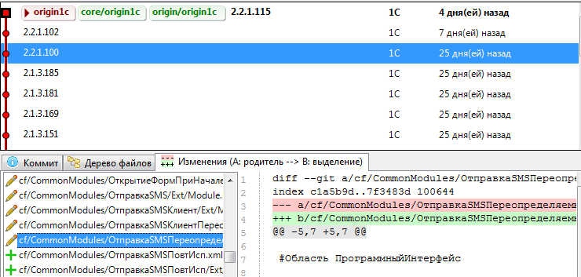
Дополнительно:
Для целей доработки создаем свой репозиторий и на базе коммита 2.1.3.185 создаем 2 новые ветки master и develop. Ветка master будет у нас для фиксации текущего релиза обновленного в рабочей базе или же для фиксации готового релиза и признака, что подготовили поставку для обновления. В ветку develop будем делать основные доработки с последующим выпуском релиза в master ветке. Для ветки develop можно настроить синхронизацию с хранилищем и все изменения в коде фиксировать стандартным способом в хранилище конфигурации.
Мы же будем использовать вариант без хранилища, пользуясь только стандартными средствами «Выгрузка конфигурации в файлы» и «Загрузка конфигурации в файлы».
Доработка документов из подсистемы Взаимодействия.
Имеем подсистему "Взаимодействия" и для ее документов вида "ЗаполанированноеВзаимодействие", "Встреча", "ТелефонныйЗвонок" в формах данных документов необходимо добавить авто-перенос строк, т.к. при заполнении описания встречи текст уезжает вправо и теряется контекст заполнения.
Вариантов решения задачи несколько:
Простейшая доработка у нас сейчас превратилась в 3 различных варианта решения, но протестировать нам так и так придется одно поведение. Поэтому создадим простейший feature файл с проверкой необходимого значения реквизита для формы.
Мы не делали ограничение видимости или доступности элемента для определенных ролей, поэтому можем спокойно предположить, что данный тест будет проводиться под полными правами пользователя «Орлов (Администратор)» на типовой демо базе. Сам тест будет прост, открыть необходимую форму, найти реквизит формы и проверить, что свойство установлено в правильное значение.
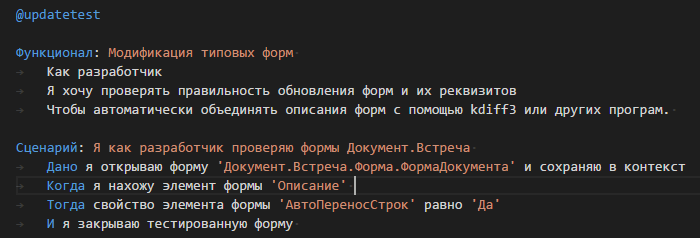
По результатам feature файлов у нас должно получиться 4 процедуры теста и по результату работы каждой процедуры теста мы запишем необходимую нам информацию в контекст: сначала ссылку на открытую форму, потом найденный элемент формы, и в последнем шаге мы уже сможем сделать проверку. Для генерации формы шагов смотрите вебинар Паутова Леонида.
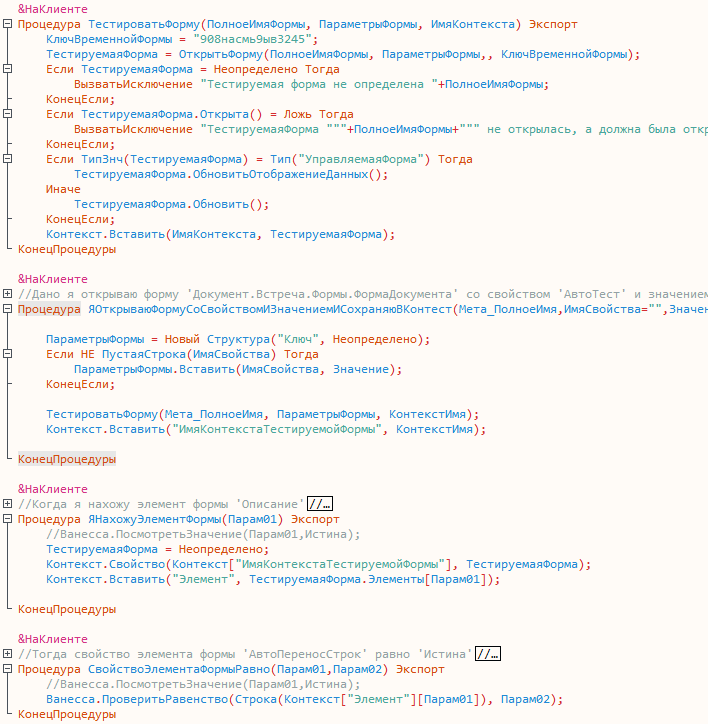
В первом шаге мы просто открываем форму по определенному пути и указание правильного полного имени формы будет на совести написавшего feature файл. Полученную форму мы помещаем в структуру контекста и в следующем шаге, в найденной форме, находим необходимый элемент и также помещаем в контекст, чтобы следующий шаг смог его использовать.
Проверив правильность тестов, мы можем приступать к следующим доработкам.
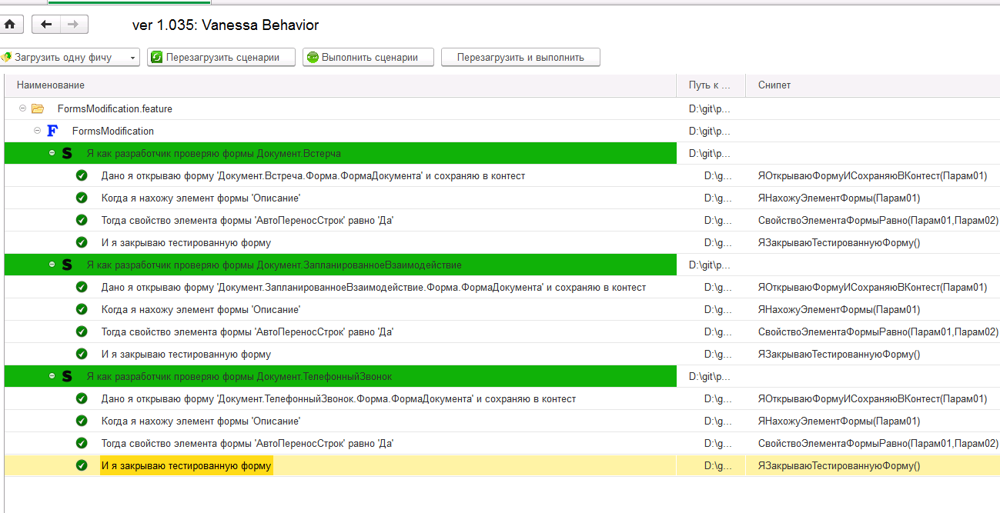
Ссылки на файлы патчей будут чуть ниже, а на данном скриншоте можно посмотреть, как будет выглядеть данный патч для конфигурации:
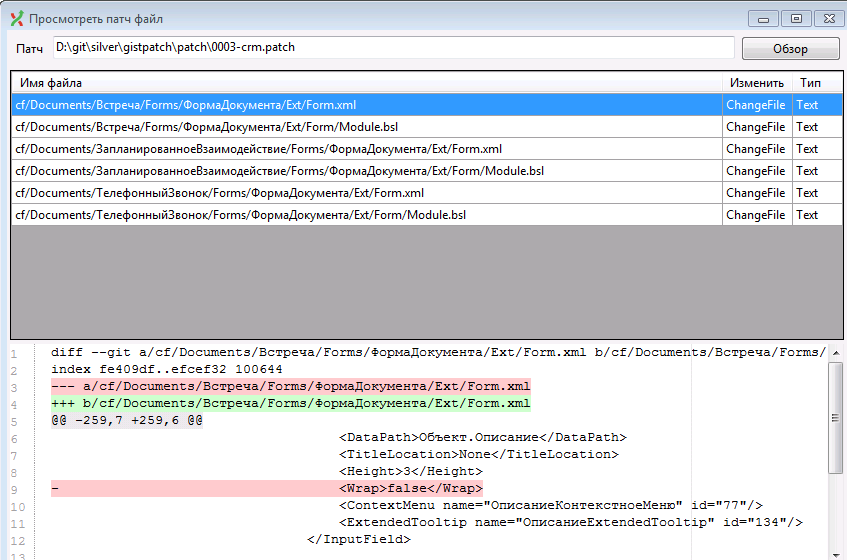
Доработка форм
Будем оптимизировать получение информации о партнере при каждой активизации строки в форме списка справочника “Партнеры”. У формы “Справочник.Партнеры.Форма.ФормаСписка” и “ФормаСпискаБезПолнотекстовогоПоиска” при активизации строки в списке используется стандартный алгоритм подключения обработчика ожидания и дальнейшей обработки информации текущей строки и заполнения панели информации по текущей строке. Самый большой вопрос к процедуре
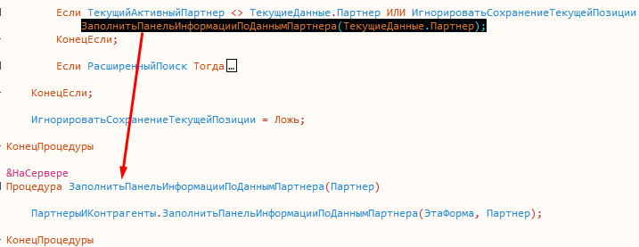
ЗаполнитьПанельИнформацииПоДаннымПартнера(ТекущиеДанные.Партнер);, т.к данная процедура вызывается на сервере, с передачей всего контекста формы, при этом заглянув в нее видим, что там необходим только один серверный вызов, для получения данных с сервера и параметром принимает только ссылку на партнера, т.е. данный код можно легко вынести в безконтекстную функцию и все манипуляции с элементами формы производить на клиенте.
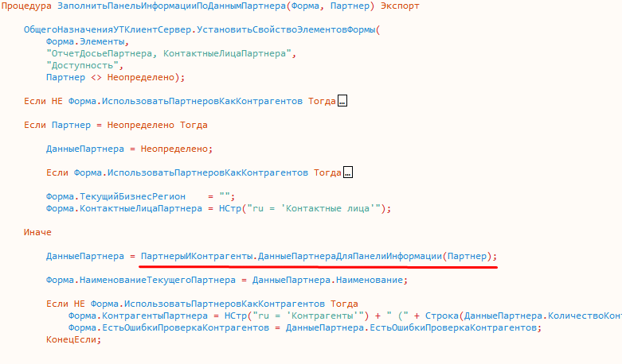
Идея простая, реализация вроде как тоже, давайте напишем тест для проверки поведения. В данном случае у нас оптимизация существующего кода, без видимого изменения поведения и желательно сначала написать тест, а потом оптимизировать данный функционал. Дополнительным условием оптимизации будет мое желание отправить патч на деревню дедушке по адресу 1c@1c.ru с предложением принять данный патч, поэтому тесты будем писать для всех случаев использования данной процедуры, глобальный поиск поможет нам с вами определить где используется данная процедура.
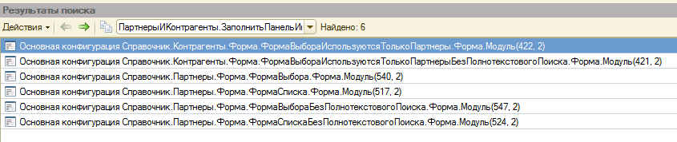
По результатам нам необходимо проверить всего 6 сценариев, что работает все нормально после рефакторинга.
Способов тестирования у нас множество, но обычно для таких случаев применяются 2 варианта:
Алгоритм работы простой, сначала перед каждым тестом в контекст устанавливаем текущую дату сервера, процедура. Далее открываем форму с определенным в feature файле именем и сохраняем в структуре Контекст, в дальнейшем мы проверяем наличие на форме элемента “КонтактныеЛицаПартнера”, данный элемент выбран специально, т.к. он присутствует как в форме справочника Контрагенты “ФормаВыбораИспользуютсяТолькоПартнеры”, так и в формах справочника Партнеры.
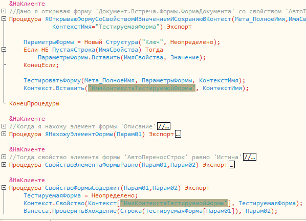
Реализация методов, тривиальна: Пауза используем из библиотек, процедура СвойствоФормыСодержит, содержит проверку вхождения специальным методом “Ванесса.ПроверитьВхождение(“.
Для тестирования формы из справочника Контрагенты, нам необходимо будет дополнительно переключить константу “ИспользоватьПартнеровИКонтрагентов” на Ложь и по окончанию теста вернуть обратно в Истину, таким образом мы покроем тестами изменения кода на 100%.
Приступим непосредственно к оптимизации клиент-серверных вызовов. Для этого переместим процедуру ЗаполнитьПанельИнформацииПоДаннымПартнера из модуля ПартнерыИКонтрагенты в модуль ПартнерыИКонтрагентыКлиент и в данной процедуре перенесем вызов ДанныеПартнераДляПанелиИнформации(Партнер) — это как раз и есть только 1 необходимый вызов сервера, в модуль ПартнерыИКонтрагентыВызовСервера. И в формах списка достаточно будет уже делать вызов не через сервер, а сразу в модуле формы.
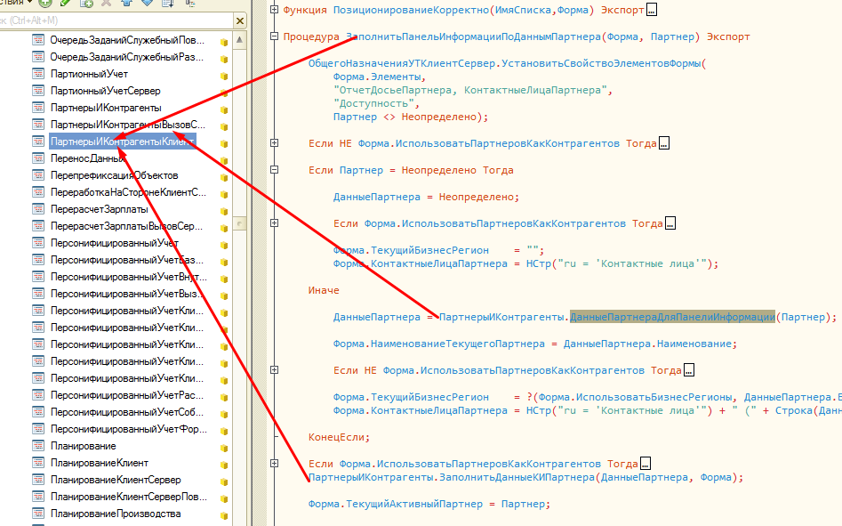
Дополнительно нам необходимо будет подправить в функции “ДанныеПартнеровДляПанелиИнформации” запись в один из ключей структуры не ТаблицыЗначений, а массива из структур. После исправления кода, выгрузки файлов конфигурации и добавления в git измененных файлов получаем примерно такой patch типовой конфигурации.
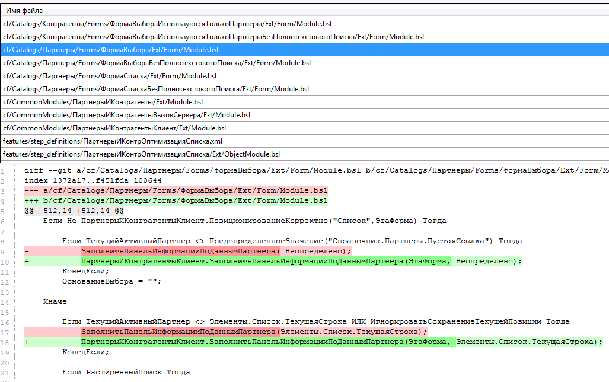
Как видим, изменения коснулись в основном 2х строк, саму процедуру, которая находится в формах на сервере ЗаполнитьПанельИнформацииПоДаннымПартнера мы не трогали, но если хотим отправить в 1С данный патч, желательно добится чистоты кода и удалить. Для внутреннего использования можно оставить, на обновление конфигурации это вряд-ли повлияет.
Доработка ролей.
В случае использования типового профиля "Менеджер по продажам" или же "Менеджер по закупкам", доступна роль “ДобавлениеИзменениеДоговоровКонтрагентов” при этом, для команды “ДоговорСКлиентомСоздатьНовый” справочника “ДоговорыКонтрагентов”, возможно, забыли добавить для этой роли право просмотра, в результате только под полными правами возможен вызов данной команды. Давайте исправим эту недоработку и напишем тест для возможности проверки данного функционала. Доработка тривиальна, поставить всего один флаг для роли, но вот легкость сопровождения/обновления вызывает вопросы.
Патч будет выглядеть просто, а вот с тестом чуть посложнее. Нам необходимо проверить доступность кнопки команды ввод на основании для пользователя не с полными правами, поэтому будем использовать менеджер тестирования и запускать тонкий клиент под другим пользователем и ограниченными правами. При этом сам тест мы можем записать от полных прав, получить готовый feature файл и потом поменять только несколько строк для возможности запуска под определенным пользователем.
Попробую вкратце описать необходимые шаги:
Ни строчки кода не понадобилось писать, только записали поведение, дополнили ролями и бизнес-функцией этого теста и получили:
Запускаем от имени администратора, проверяем работоспособность данного feature файла и потом меняем только одну строку в разделе Контекст и используем существующий библиотечный шаг, по запуску тестового клиента, под другим пользователем “Закупки (КоролевСВ)” и теперь стало
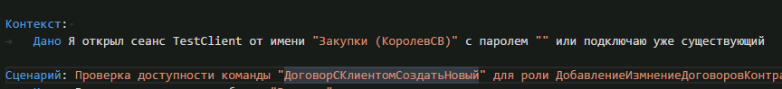
Проверяем работу feature файла и видим, что с измененной ролью пользователю теперь доступно создание договора контрагента из необходимых нам разделов.
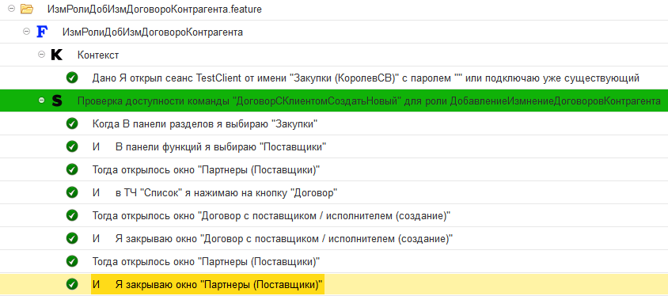
Обычно при доработке типовых ролей, добавляю в еще один шаблон с понятным наименованием и в комментариях пишу те изменения которые я сделал в данной роли. В данном примере я в git помещу только изменение роли, без изменения шаблона.
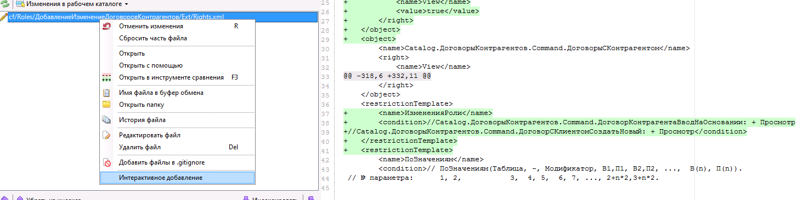
Результирующий патч получился совсем маленький, но при этому у нас в git хранится история изменения данной роли и есть тестовый сценарий, который мы можем запустить после обновления и получить сразу итоговый отчет с ответом на вопрос “все ли мы обновили, ничего не упустили?”.
Обновление
Итак доработки сделаны, изменения зафиксированы, теперь можно и запускать процесс обновления конфигурации на новый релиз. Обновление делать будем совместно с git -ом.
Упрощенный алгоритм обновления можно расписать на такие шаги:
находясь в ветке develop находим оригинальный коммит необходимого нам обновления и выбираем пункт меню “Слить в текущую ветку” или же, если вы любите консоль так, как люблю ее я, то выполняем команду
git merge --no-ff --no-commit 430df
где --no-ff это признак, что всегда делать результирующий коммит и 430df это sha1 от коммита, который делали от имени 1С при обновлении конфигурации поставщика, --no-commit означает, что не коммитить сразу, если не было конфликтов, возможно мы по результатам все-таки захотим отредактировать изменения или сообщение коммита.
По результатам merge видим, что у нас есть конфликты в сравнении пытаемся их разрешить с помощью kdiff3. Также видим, что все остальные объекты, метаданных, которые изменяли git разрешил сам.
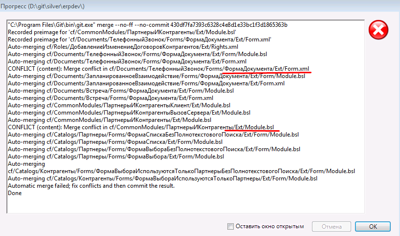
Для файла формы Телефонный звонок, kdiff3 автоматически сам разрешил конфликты и нам остается только нажать Ok, сохранить и закрыть kdiff3
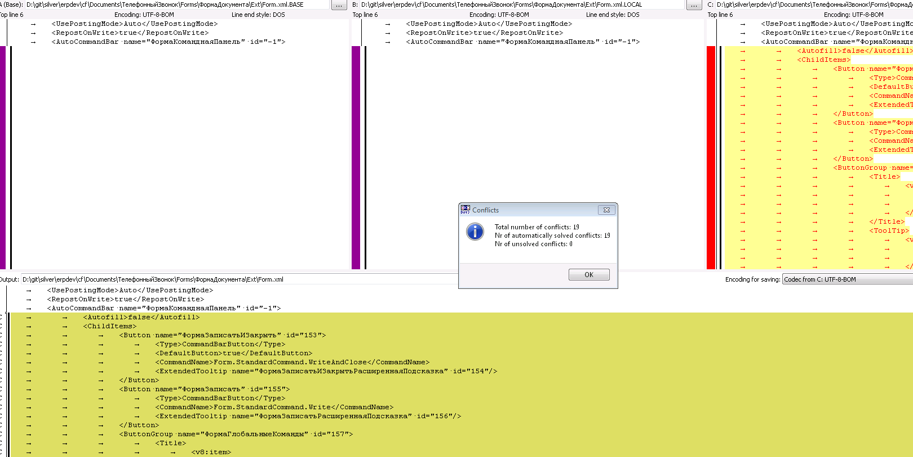
Для общего модуля “ПартнерыИКонтрагенты” чуть сложнее, т.к. тут изменилась процедура которую мы переместили в другой модуль, но как раз в этой процедуре и произошли изменения. Т.к. мы еще находимся в контексте изменений, то можем смело сказать, что нам надо разрешить конфликт с приоритетом файла B (тот, что посредине) и все также убрать данную процедуру из модуля и при этом измененную строку перенести в модуль ПартнерыИКонтрагентыКлиент. Но, если бы мы не были в контексте или же изменения были так давно, что мы даже забыли, а что же в этом модуле делали, то мы всегда можем с вами посмотреть историю изменения именного этого модуля и по сообщениям коммита вспомнить, что-же мы делали, такого. (Привет любителям пустого комментария в хранилище 1с).
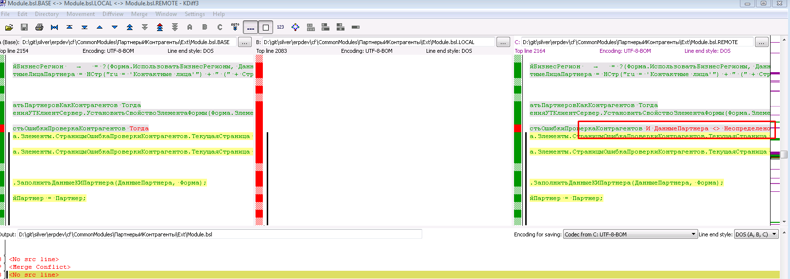
Т.е. для просмотра истории по файлу, открываем еще один просмотрщик git репозитория, находим в дереве наш файл и там выбираем пункт меню “История файла” или же “Авторство изменений”
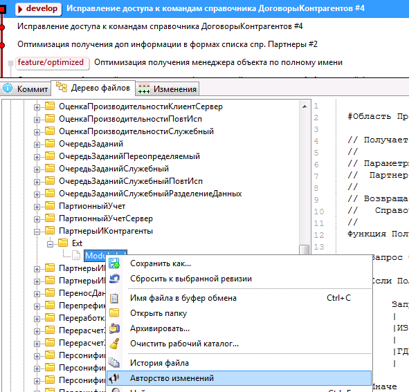
В результате получаем историю с комментариями изменений именного этого файла и можем посмотреть, кто, что и когда делал. При необходимости можем быстро восстановить контекст изменения и понять, что же нам по результатам надо сделать с данным конфликтом:
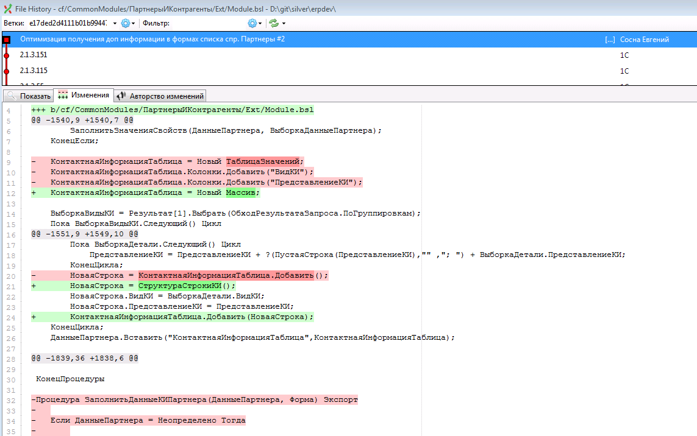
Возвращаемся в окошко kdiff3, копируем измененную строку и в vscode меняем необходимый нам модуль на правильное поведение.
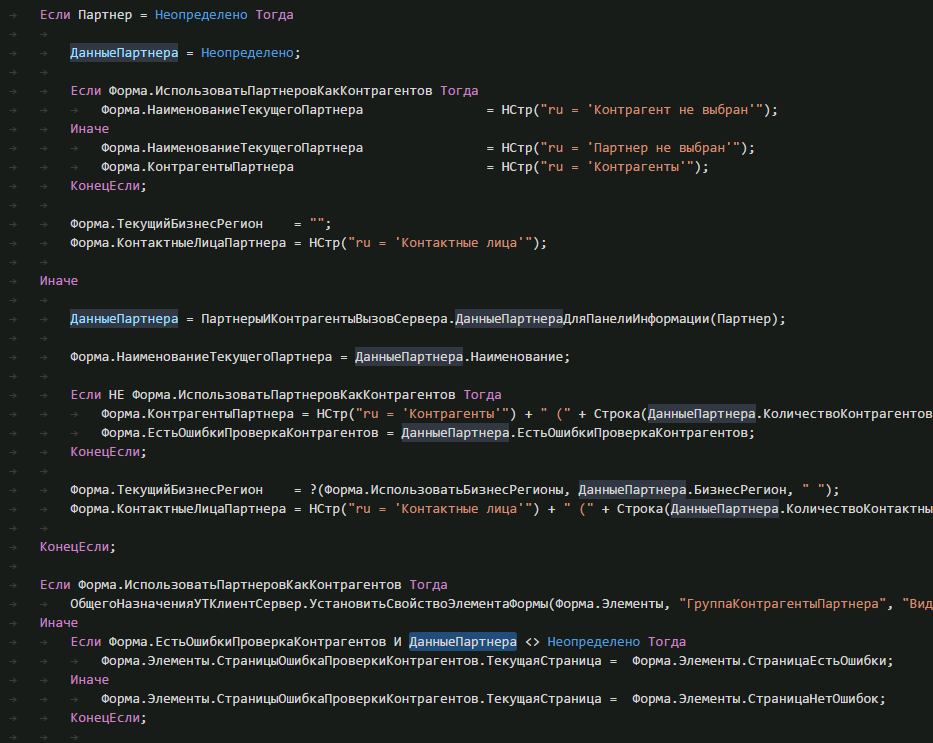
Если бы я проводил code-review для этого изменения, то попросил бы в самом начале сразу инициализировать переменную “Форма.ЕстьОшибкиПроверкаКонтрагентов = Ложь” и не проверять дополнительно на ДанныеПартнера <> Неопределено, но не я провожу code-review и оставим типовой код как есть, для простоты последующего сопровождения.
Как видим на этом скриншоте у нас остался только 1 файл модуля ПартнерыИКонтрагентыКлиент не проиндексирован, т.к. мы его вручную исправляли.
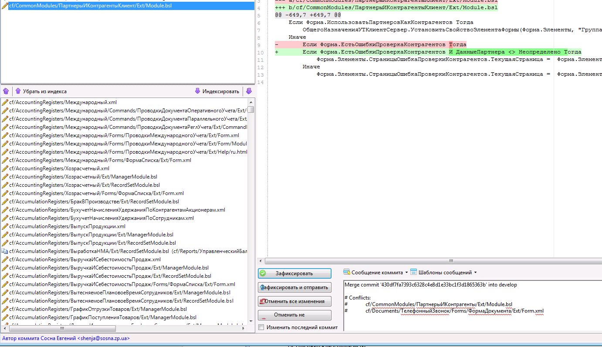
При запуске обновления с версией 2.2.1.100 фильтром “Показывать дважды измененные” можно увидеть количественный шум от списка изменений которые нам предлагаются разрешить.
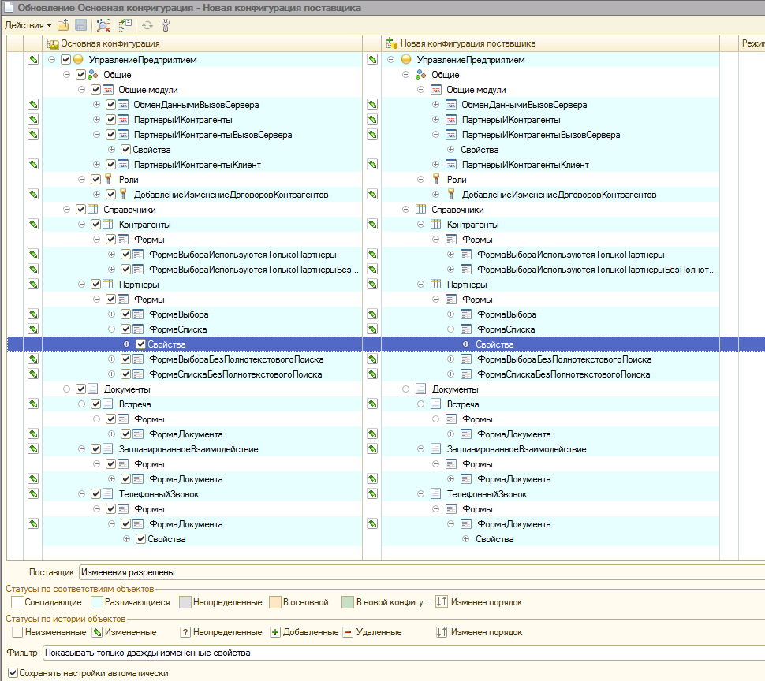
И если с модулями более или менее понятно, что делать, то для ролей и форм объединение с каким-либо приоритетом может дать неожиданные результаты.
Как и говорилось по плану, выбираем "Объединить с приоритетом основной конфигурации" и запускаем сравнение с собранным cf файлом из исходников из каталога в котором делали merge конфигурации.
При этом, если выбрать фильтр с “Показывать только свойства с конфликтами объединения”, то в списке будет совершенно пусто, что ни есть правильно.
Осталось теперь выполнить последний шаг в виде сравнения объединения собранного cf файла из исходников и объединить только те объекты метаданных, которые у нас были реально изменены. Дополнительно, хотелось бы отметить, что есть проблема с выгрузкой/загрузкой справочной информации, и даже 8.3.9.1818 не научилась нормально выгружать файлы справки, поэтому в файле mergeSettings.xml советую сразу прописать для всех свойств объектов метаданных правило “DoNotMerge”.
Для формирования файла mergeSettings можно воспользоваться получением информации об измененных файлах по результатам merge “git diff --name-only --cached” и сформировать простейшим скриптом необходимый нам mergeSettings. В результате получаем такой пример объединения конфигураций
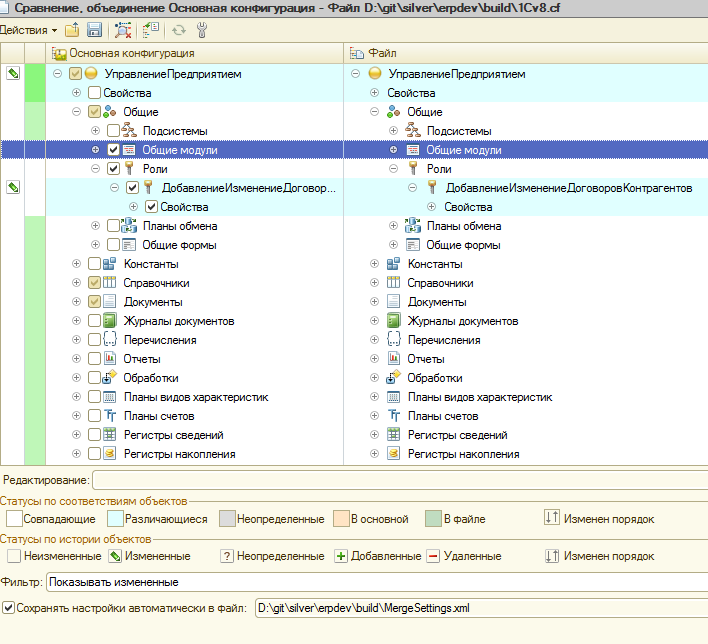
Нам осталось только выполнить объединение, обновление конфигурации базы данных, но это все обычные действия с которыми все знакомы, и провести итоговый запуск тестов для проверки, что у нас все работает и поведение наших доработок не отличается от ожидаемого.
В git результат обновления и объединения будет выглядеть так
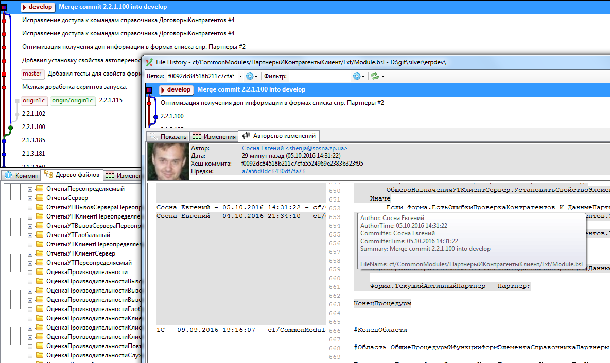
p.s.: все вышеописанные действия поддаются автоматизации, кроме разрешения конфликтов. Все файлы патчей представлены в этом репозитории https://goo.gl/9UB91i